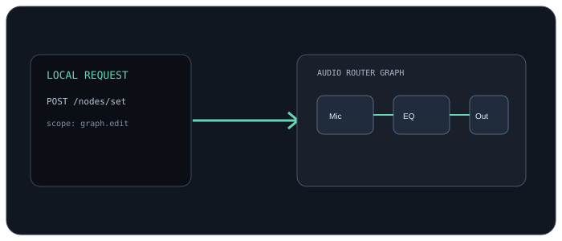

⌘
HTTP API
Use local request/response control. Generate JSON, curl, or PowerShell examples from the API tab.
Structured local controls let your scripts and apps work with the same sessions and routes as the desktop canvas.

Inspect capabilities, node schemas, sessions, devices, and routes. Plan graph edits against a revision, then apply them with structured results and actionable errors.
The optional HTTP API runs locally and is off until started. Keep it on this PC, or select a private network address with the same token and permissions.
{
"node": "stable-node-id",
"parameters": { "thresholdDb": -24 },
"idempotencyKey": "voice-setup-01"
}Use local request/response control. Generate JSON, curl, or PowerShell examples from the API tab.
Use the command-line client for discovery, session edits, routing, recording, and inspection.
Discover supported operations instead of guessing. Conflicting edits return a revision conflict.
Filter the current endpoint list by path, method, permission, or backend operation. For request and response schemas, use the interactive Swagger view in the desktop app.
This public page shows the endpoint catalog. The interactive Swagger view runs in AudioRouter: open API → Start API → Open Swagger documentation.
Loading endpoint catalog…
HTTP requests use a bearer token and the backend permission scope shown for each operation. Two desktop-only consent controls are not exposed over HTTP. The desktop app's Swagger view is authoritative for schemas and the installed-version contract.
Routing and control run on your Windows PC. Credentials are local, permissions are scoped, and API requests don't carry microphone or recording contents.
Keep the listener on this PC unless another trusted device needs access. Network mode accepts private and link-local peers and uses the same local token.
Browse API reference ↗Start locally, discover the API, and build a small integration.